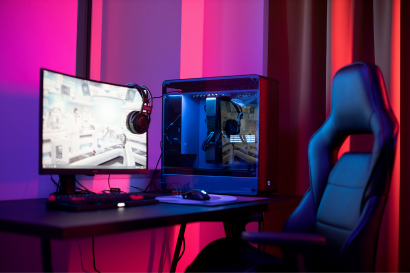

Profissão Full Stack: A Carreira Versátil em Alta no Mercado de TI
Entenda por que ser um desenvolvedor Full Stack está em alta no mercado de tecnologia. Descubra as habilidades necessárias, as oportunidades de carreira e os desafios que esses profissionais enfrentam ao dominar tanto o front-end quanto o back-end do desenvolvimento web.
Ler mais
IA Regenerativa: A Nova Fronteira da Inteligência Artificial
A IA regenerativa está revolucionando a tecnologia com suas capacidades de aprender e se adaptar continuamente. Explore como essa inovação está sendo aplicada em diversas áreas, desde saúde até robótica, e quais são os seus potenciais impactos no futuro.ullam tenetur error? Laborum, modi itaque. Sunt.
Ler mais

Setups Gamers: Ideias Incríveis para Transformar Seu Espaço!
Inspire-se com as melhores ideias de setups gamers para criar o ambiente de jogos perfeito. Desde configurações minimalistas até espaços high-tech, veja dicas de equipamentos, organização e personalização para levar sua experiência de jogo ao próximo nível.
Ler mais